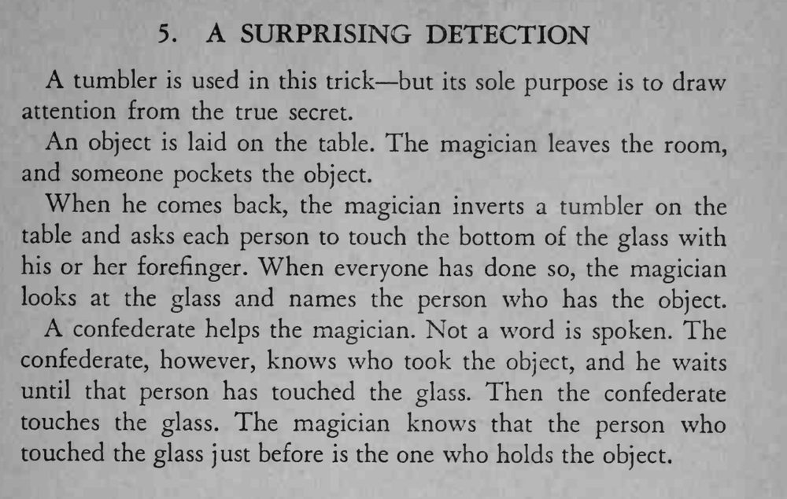

观众把物件藏进口袋后，魔术师倒扣玻璃杯，让每个人依次用食指碰杯底，随后就指出是谁拿了物件。
全程不说一句话，同伙要最后下手，顺序不能乱。

tumbler is used in this trick but its sole purpose is to draw attention from the true secret. An object is laid on the table. The magician leaves the room, and someone pockets the object. When he comes back, the magician inverts a tumbler on the table and asks each person to touch the bottom of the glass with his or her forefinger. When everyone has done so, the magician looks at the glass and names the person who has the object. A confederate helps the magician. Not a word is spoken. The confederate, however, knows who took the object, and he waits until that person has touched the glass. Then the confederate touches the glass. The magician knows that the person who touched the glass just before is the one who holds the object.